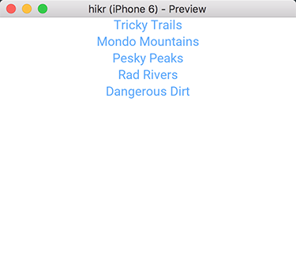

Introduction
In the last chapter, we extended our Edit Hike view by adding a second view to select which hike we're going to edit. This was a big step forward, but now it's about time we start splitting up our code into smaller, reusable components so that our code will be easier to manage as our project grows. This will teach us how to utilize important tools that Fuse provides for managing the complexity of real-world app projects.
More specifically, what we'll do in this chapter is separate out our two views - the hike selector view, which will become our home page, and the edit hike view, which will become our edit hike page.
Now, because this is a lot of ground to cover, this part of the tutorial will only go over how to split our view into separate components, not how we'll fit them back together and develop the flow of our app.
The final code for this chapter is available here.
Transforming the Edit Hike view into a component
At this point it is a good idea to move our components into their own files so that we eventually can design a navigation flow between them. We'll do this in small steps. First, we'll want to create a new folder in our project called Pages:
$ tree
.
|- MainView.ux
|- App.js
|- hikr.unoproj
|- PagesInside this new folder, we'll create a new file called EditHikePage.ux. Inside there, we'll place the following code:
<Page ux:Class="EditHikePage"></Page>Our directory tree should now look a bit like this:
$ tree
.
|- MainView.ux
|- App.js
|- hikr.unoproj
|- Pages
|- EditHikePage.uxNow before we move on, I need to explain a couple things. Let's take another look at our new EditHikePage.ux file's contents:
<Page ux:Class="EditHikePage"></Page>At first glance, it looks like we're just creating a Page with a funny ux:Class property and nothing in it. But what's a Page exactly? And what's with this ux:Class stuff?
To answer the first question, a Page is basically a special kind of UI element that will participate in navigation. We don't actually have to use a Page here; we could just as well use a Panel, a Button, or something else entirely. But it's generally considered best practice to use a Page if you're going to use the component with navigation specifically, which we'll do a bit later in this chapter and the following one.
As for the second question, ux:Class means that instead of creating an instance of a Page, we're creating a class that extends the Page class. If you've ever done some object-oriented programming before, this terminology will sound very familiar. If not, it may sound a little strange, but it's actually a pretty simple concept to grasp. Basically, we can think of a class as a kind of element, and an instance is an element of that kind. For example, Button is a class, and when we say <Button /> in UX, we're making an instance of the Button class. Button describes how a button element should look and feel, and <Button /> describes that an actual Button element exists in our view.
But what does extend mean in this context? It simply means that we're going to make our own class that is basically the same as a given class, but we'll add a few things of our own. In our case, we still want to end up with a Page, but we want some extra stuff on it as well (the stuff that's specific to our view). So, we'll say <Page ux:Class="EditHikePage" />, which means we're going to create our own class called EditHikePage that extends the Page class. Then, whenever we want to use this class (create an instance), instead of saying <Page /> and putting all of our custom stuff inside it, we can simply say <EditHikePage />.
You can find out more about classes in our Creating Components documentation.
Now that we've understood the basic contents of this file, it's time to migrate the code we want in our view over from MainView.ux. If we take a look at that file, we'll see something like this:
<App Model="App">
<ClientPanel>
<ScrollView>
<StackPanel>
<Each Items="{hikes}">
<Button Text="{name}" Clicked="{chooseHike}" />
</Each>
<Text>Name:</Text>
<TextBox Value="{hike.name}" />
<Text>Location:</Text>
<TextBox Value="{hike.location}" />
<Text>Distance (km):</Text>
<TextBox Value="{hike.distance}" InputHint="Decimal" />
<Text>Rating:</Text>
<TextBox Value="{hike.rating}" InputHint="Integer" />
<Text>Comments:</Text>
<TextView Value="{hike.comments}" TextWrapping="Wrap" />
</StackPanel>
</ScrollView>
</ClientPanel>
</App>Looking at the top-level parts of this file, we first see our App, and then a ClientPanel. All of the other contents are what make up our view specifically. So these are the parts we'll want to move over to our EditHikePage.ux file, inside the Page. This will look something like this:
MainView.ux:
<App Model="App">
<ClientPanel>
</ClientPanel>
</App>EditHikePage.ux:
<Page ux:Class="EditHikePage">
<ScrollView>
<StackPanel>
<Each Items="{hikes}">
<Button Text="{name}" Clicked="{chooseHike}" />
</Each>
<Text>Name:</Text>
<TextBox Value="{hike.name}" />
<Text>Location:</Text>
<TextBox Value="{hike.location}" />
<Text>Distance (km):</Text>
<TextBox Value="{hike.distance}" InputHint="Decimal" />
<Text>Rating:</Text>
<TextBox Value="{hike.rating}" InputHint="Integer" />
<Text>Comments:</Text>
<TextView Value="{hike.comments}" TextWrapping="Wrap" />
</StackPanel>
</ScrollView>
</Page>If we save these files, our preview will update, but this time, our contents will vanish! The reason for this is simple - we've only created the EditHikePage class, but we haven't used it anywhere! To fix this, we'll just add an instance of the EditHikePage class inside the ClientPanel in MainView.ux, like so:
<App Model="App">
<ClientPanel>
<EditHikePage />
</ClientPanel>
</App>Notice how this looks just like we had used any other class that comes standard in Fuse - but this time, it's a class we've created ourselves! If we save MainView.ux, we'll see that our view shows up again in preview. Awesome!
Separating our home page
At this point, our EditHikePage class is actually two components in one - a hike selector, and a hike editor. Generally, when making components, it's a good idea to make sure they're a simple as possible, and that they only represent one thing, like a single view. What we'll do next is to separate the selector view into its own class, which we'll call the HomePage.
Now that we've basically done this before, this second time should be a little easier. First, we'll create a blank page class that will become our home page, in a file called HomePage.ux in our Pages directory:
<Page ux:Class="HomePage"></Page>Next, we'll migrate the home page-specific UX code from EditHikePage.ux into HomePage.ux. Specifically, we're after the Each tag that displayed the hikes collection:
<Each Items="{hikes}">
<Button Text="{name}" Clicked="{chooseHike}" />
</Each>So let's go ahead and move that over:
<Page ux:Class="HomePage">
<Each Items="{hikes}">
<Button Text="{name}" Clicked="{chooseHike}" />
</Each>
</Page>Also, since we're going to be displaying a bunch of these hikes, we'll want to place them inside a StackPanel. It's a good idea to also have that inside a ScrollView, so we'll set that up too:
<Page ux:Class="HomePage">
<ScrollView>
<StackPanel>
<Each Items="{hikes}">
<Button Text="{name}" Clicked="{chooseHike}" />
</Each>
</StackPanel>
</ScrollView>
</Page>And that's it! At this point, our page should be ready for display.
Displaying our home page
By now, we've got multiple pages, and we'll need a way to display them and navigate between them. In Fuse, this is handled by the Navigator component. Navigation in general will need a proper introduction, and we'll want to take our time learning how to do it properly, so we'll take a closer look at it in the next chapter.
For now, to keep things simple, we'll use a PageControl instead. A PageControl is great for cases where we want to have a few pages side-by-side that we'll to swipe between, which is just fine for initially displaying our two pages.
So, if we take a look at MainView.ux, it currently looks something like this:
<App Model="App">
<ClientPanel>
<EditHikePage />
</ClientPanel>
</App>Let's place the EditHikePage instance inside a PageControl, like so:
<App Model="App">
<ClientPanel>
<PageControl>
<EditHikePage />
</PageControl>
</ClientPanel>
</App>Now, all we have to do is add a HomePage instance inside our PageControl as well. Because it's the home page, let's place it above our existing EditHikePage instance:
<App Model="App">
<ClientPanel>
<PageControl>
<HomePage />
<EditHikePage />
</PageControl>
</ClientPanel>
</App>And now, when we save all of this, our new HomePage will be displayed, and we can swipe right to reveal the EditHikePage as well. Selecting hikes also works exactly as it did before. Cool!
Our progress so far
Phew, we've covered a lot of ground here! At this point, we've got our two views separated into components and displayed side-by-side in a PageControl. This is how they look:
HomePage.ux:

EditHikePage.ux:

And here's what the code for all of our various files looks like. It's a few more files now, but they're much simpler now in isolation:
hikr.unoproj:
{
"Packages": [
"Fuse",
"FuseJS"
],
"Includes": [
"*",
"**.js:FuseJS"
]
}MainView.ux:
<App Model="App">
<ClientPanel>
<PageControl>
<HomePage />
<EditHikePage />
</PageControl>
</ClientPanel>
</App>App.js
class Hike {
constructor(name, location, distance, rating, comments) {
this.name = name;
this.location = location;
this.distance = distance;
this.rating = rating;
this.comments = comments;
}
}
export default class App {
constructor() {
this.hike = new Hike(
"Tricky Trails",
"Lakebed, Utah",
10.4,
4,
"This hike was nice and hike-like. Glad I didn't bring a bike."
);
this.hikes = [
new Hike(
"Tricky Trails",
"Lakebed, Utah",
10.4,
4,
"This hike was nice and hike-like. Glad I didn't bring a bike."
),
new Hike(
"Mondo Mountains",
"Black Hills, South Dakota",
20.86,
3,
"Not the best, but would probably do again. Note to self: don't forget the sandwiches next time."
),
new Hike(
"Pesky Peaks",
"Bergenhagen, Norway",
8.2,
5,
"Short but SO sweet!!"
),
new Hike(
"Rad Rivers",
"Moriyama, Japan",
12.3,
4,
"Took my time with this one. Great view!"
),
new Hike(
"Dangerous Dirt",
"Cactus, Arizona",
19.34,
2,
"Too long, too hot. Also that snakebite wasn't very fun."
)
];
}
chooseHike(arg) {
this.hike = arg.data;
}
}Pages/EditHikePage.ux:
<Page ux:Class="EditHikePage">
<ScrollView>
<StackPanel>
<Text Value="{name}" />
<Text>Name:</Text>
<TextBox Value="{name}" />
<Text>Location:</Text>
<TextBox Value="{location}" />
<Text>Distance (km):</Text>
<TextBox Value="{distance}" InputHint="Decimal" />
<Text>Rating:</Text>
<TextBox Value="{rating}" InputHint="Integer" />
<Text>Comments:</Text>
<TextView Value="{comments}" TextWrapping="Wrap" />
</StackPanel>
</ScrollView>
</Page>Pages/HomePage.ux:
<Page ux:Class="HomePage">
<ScrollView>
<StackPanel>
<Each Items="{hikes}">
<Button Text="{name}" Clicked="{chooseHike}" />
</Each>
</StackPanel>
</ScrollView>
</Page>What's next
Now that we've got our two views separated into different components, it is time to take a closer look at how we do navigation in Fuse. In the next chapter we'll start creating a propert flow through our app, and learn how we can create separate models per page to make our app even more structured. So when you're ready, let's move on!
The final code for this chapter is available here.